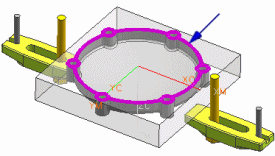
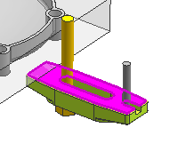

创建工序
-
点击插入工具条上的创建工序
 。
。 -
在创建工序对话框的类型列表中，选择 mill_planar。
-
在工序子类型组中，点击平面轮廓铣
 。
。 -
在位置组中，设置如下所示参数：
程序
1234
刀具
EM-1.00 (铣刀-5 参数)
几何体
WORKPIECE
方法
MILL_ROUGH
-
在名称组的输入框中键入平面轮廓铣，然后点击确定。
-
在平面轮廓铣对话框的几何体组中，点击指定部件边界 。
-
在边界几何体对话框中，选中忽略孔
 复选框。
复选框。 -
旋转部件，然后选择如下图所示的面。

-
点击确定。
-
在平面轮廓铣对话框的几何体组中，点击指定检查边界 。
您将选择夹具的底部以创建检查边界。
-
在边界几何体对话框中，选中忽略孔
以及忽略倒斜角 复选框。 -
选择各个夹具的底部面，如下图所示。

-
点击确定。
-
在平面轮廓铣对话框的几何体组中，点击指定底面。
将打开平面对话框。
-
选择如图所示面以定义底面。
如果无法选择该面，在选择条上的选择范围列表中，选择在工作部件和组件内。
-
如果需要，点击确定以关闭部件间复制信息框。
-
点击确定以关闭平面对话框。